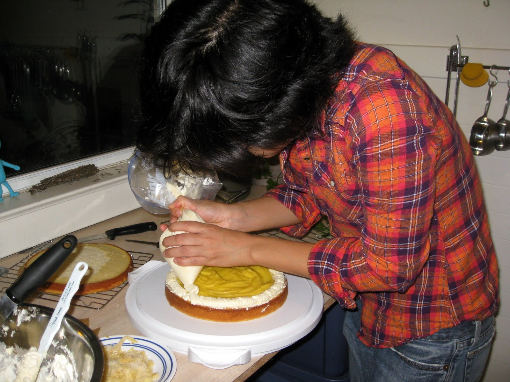

Приготування тортів
Коржі для більшості тортів виготовляють з бісквітного або пісочного тіста, класичні торти представляють собою комбінацію з тонкого пісочного коржа (для більш стабільної основи) і одного або декількох бісквітних коржів. Також для тортів інколи використовують вафельні коржі. Для змащування коржів переважно використовують повидло, згущене молоко, крем. Також між коржами можна викласти шар фруктів, ягід, горіхів, цукерок, змочити коржі невеликою кількістю алкоголю (коньяк, ром, лікер). Як в тісто, так і в крем можна додати різні смакові та ароматичні добавки, такі як какао, ваніль, харчові барвники.
Для оформлення тортів зазвичай використовують крем (як правило, той самий, що й для змащування коржів), видавлюючи його кондитерським шприцом на верхній шар торта і його боки. Також торт можна покрити глазур’ю, мармеладом, тощо. Останнім часом все більш поширеною стає еластична цукрова патока з маршмеллов, яку можна використати не лише для покриття торта, але і для ліпки декоративних фігурок для прикраси кондитерських виробів. Окрім цього, для прикрашання тортів використовують фрукти, ягоди. горіхи, фігурки з марципанів, шоколадну і кокосову стружку, збиті вершки.
Хімічний склад середньостатичного торта (на 100 г. продукту):
- Вуглеводи: 34-53 г.
- Білки: 5-7 г.
- Жири: 12-39 г.
Калорійність середньостатичного торта (на 100 г. продукту): 350-560 ккал.


{kind=link}